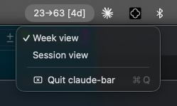

claude-bar
Claude Code quota, always visible.
A lean NSStatusItem app that reads your Claude Code usage cache and
surfaces session quota, weekly burn, and time-to-reset directly in the macOS menu bar —
no terminal, no dashboard, no context-switching.
current % → projected % · time until reset
What it does
One compact string in your status bar. Everything you need to know at a glance.
Dual quota view
Switch between Week view (weekly burn → projected) and Session view (current session usage). One menu tap away.
Time-to-reset
The [4d] suffix shows exactly when your quota resets —
days, hours, or minutes depending on how close you are.
Auto-refresh
Polls ~/.claude/usage-cache.json every 30 seconds.
Wakes on sleep-resume so the number is always fresh when you open the lid.
Zero overhead
Pure AppKit, no SwiftUI, no third-party packages. Runs as an accessory app — no Dock icon, no App Switcher clutter.
Fully local
Reads files already written by the Claude Code CLI. No network calls, no tokens, no telemetry. Data never leaves your machine.
Graceful degradation
Missing cache file? Shows -- instead of crashing.
All fields in UsageSnapshot are optional by design.
Built with
Native macOS stack, no dependencies.
Language
Platform
Data
See It In Action
Sits quietly next to Bluetooth, language, and other system icons.
